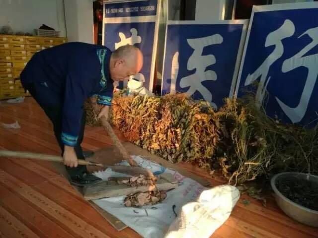
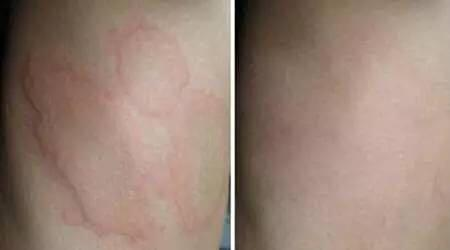
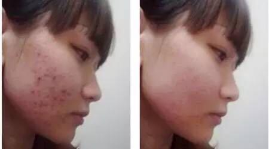

长按二维码识别
添加老师微信号
为你一对一解决问题
顽固皮肤癣，反反复复怎么办？试试这招！朋友圈疯传！
皮肤病不但影响容貌，也影响工作和生活。很多人都知道，牛皮癣、白癜风、神经性皮炎、荨麻疹等 皮肤病容易在春季诱发，"立春后，百草回芽"，大自然万物复苏 、天气转暖和，大家的皮肤刚从冬眠中苏醒过来，新陈代谢尚未完全恢复，难以适应变化无常的气候，显得异常的娇嫩、敏感，一切不良的外界刺激都可能使其产生 病变。为帮助大家解决问题，本文专门走访了黔东南老苗医，教大家快速告别皮肤病。
温馨提示
 ↑神秘的黔东南，孕育了很多民间皮肤病验方，百试百灵，效果神奇！
↑神秘的黔东南，孕育了很多民间皮肤病验方，百试百灵，效果神奇！

在黔东南地区凯里方圆百里，杨氏医术传承千年历史的苗医祖师一脉，医术高明远近闻名，杨医师1953年生，侗族人，世居贵州凯里，是黔东南地区著名非物质文化遗产苗药的继承人，中国民族医药协会会员。少数民族皮外科圣手，拥有50年行医经验，被誉为少数民族医学界的大熊猫。
熟悉他的人知道，杨氏医术精湛，尤其是治疗牛皮癣，白癜风，荨麻疹，神经性皮炎，湿疹等皮肤病，经验宏富，造诣极深。
杨医师：不怕你有皮肤病，越顽固越好；就怕你夏天不治，冬天放弃，毒素长留身体。“

我们杨家是苗医，祖辈行医，擅长擀毒治肤，从不敢有半分欺诈之举。今天我要向大家公布几副皮肤病秘方，不打针，不吃药，哪痒抹哪，哪痛喷哪。没有说治不好皮肤病的。就怕夏天无故不治，冬天马虎放弃，让毒素长留身体。”
↑杨家的祖宅，杨老爷子已经在此行医了五十年，救治了许多皮肤病患者
熟悉杨医师的人，都知道他医德崇高，为人耿直，他说：“人生不过百年，日食不过三餐，夜眠不过三尺。我已至古稀之年，金钱之于我，不过是过眼云烟，解除病人痛苦才是我余生最大的快乐！
12年牛皮癣眼看着一天天消失，陈先生拍手叫绝！

↑感谢陈国斌提供的照片。
山西太原的陈国斌患有牛皮癣很多年，想尽了办法就是没办法好，通过朋友介绍找到了杨医师，5个月的时间，老牛皮一天天消失，全好了，终于不再自卑，能像正常人一样处对象了，特地发来照片，跟杨老先生分享康复的喜悦。
神经性皮炎好了，苔藓消了跟正常皮肤一样

↑感谢福州小莉提供的照片。
小 莉自从患上神经性皮炎，痛苦不堪。越抓越痒，越痒越抓，抓的出血，才肯罢休，白天工作没精神，晚上睡不好，医院开的药，药店买的软膏用了一堆，只是略有缓 解，不能完全好，皮肤变得粗糙，增厚，色素沉着，难看死了，用了杨医师的专方一个月，就再不痒了，皮肤恢复细腻光滑，人也精神了！
神经性皮炎好了，苔藓消了跟正常皮肤一样

↑感谢老余愿意提供自己的照片。
山东滨州的老余，患慢性湿疹5年了，痒用刀刮，热水烫，潮红起水泡，流脓流水，皮损处厚得像树皮一样粗糙，浑身上下没一块好地方，用了很多方法都好不了，自从用了杨医师的秘方，3个月后湿疹全都好了。
如果你也有牛皮癣、鱼鳞癣、白癜风、皮炎湿疹、荨麻疹、各类杂癣等皮肤病，想治好自己的疑难杂症，请长按识别下方二维码，关注杨医师的微信号进行咨询。
杨医师的方子遵崇苗医先祖创立的“三位一体”组方原则，一方含三类药，包括：起主治作用的各碑嘎药（领头药），起补益功能的各搜嘎药（铺底药），起增效作用的各薄嘎药（监护药）。配单不配双，方分阴阳，能破除皮肤病中的各种风寒气水毒，打破疾病旧状态，增进皮肤新组织，化腐肤皮疹为正常肌肤，变朽肌斑疮为健康组织。
↑制作苗药实景（1）

↑采挖苗药实景
配方①：银线草（四块瓦）、苦参、蛇床子、雪莲、地肤子、白藓皮、黄柏、丹皮（牡丹皮）、紫草等、本方适用于银屑病（牛皮癣）等；
配方②：苦参、黄柏、蛇床子、明矾、龙胆草等，本方适用于皮炎湿疹等；配方③：葛根、苦参、白癣皮、蛇床子、公丁香、五倍子、野菊花、甘松等，本方适用于白癜风；
配方④：七叶一枝花、马齿笕、半边莲、薏苡仁、蒲公英、皂角刺、红花、忍冬藤、血水草、甘草等，本方适用于疱疹，扁平疣、尖锐湿疣等……
此外，还有专门针对神经性皮炎，掌跖脓疱病，淀粉样变，鱼鳞病，荨麻疹，结节性痒疹，毛囊炎，痤疮（青春痘）等症的对症苗方。受篇幅所限，就不在此列出。
黔东南是少数民族聚集地，少数民族的人们因生存环境恶劣，各种整治皮肤病的窍门多如牛毛，古有“疾病八百，苗药三千”之说。杨医师珍藏着一百多副祖传偏方，远不止这几味药方，而且都是苗人等少数民族使用上千次、上万次的效验方。
杨医师的方子制成的制剂，能对症施于皮肤，真正体现了苗医药整治皮肤病的优越性，体现出侗族民间验方、非遗偏方的显著功用，大家为杨医师的无私之举点个zan吧。

↑这就是杨医师的百宝柜，塞满眼框的全是道地药材，与药店的药柜数量比起来，真是数量多得惊人。而且，这还只是局部。
荨麻疹再也不犯了，心情好极了！

↑西 安的阮女士患荨麻疹多年，每年冬天发的严重，瘙痒难忍，抓得一道道印子，成片的风疙瘩让人心烦，浑身上下不自在，难受的时候自己躲起来拼命抓。打过针，吃 过药，做过脱敏治疗，效果都不明显，后来用了杨医师荨麻疹内外调理专方，赶毒修肤的同时，内调扭转过敏体质，增强体质，就这样坚持了二个月就好彻底了，再 也不犯了。
股癣好了，再也不怕坐热板凳！

↑天 津的路强是个大老爷们，每次坐公交地铁，还要带随身带一个水垫子，被朋友取笑很“娘”。他觉得很无奈，因为他有难言之隐——坐板疮（学名股癣）。等公交的 时候想挠，坐地铁的时候也想挠，夏天最容易复发，特别是坐了人家热板凳。年年治，年年发。在微信朋友圈看到杨医师公布的方子，用了才10多天，屁股上的红 疙瘩少了，也不痒了！40°的高温天，坐了人家热板凳也没再发过。再热的天，也不用带水垫上班了！
如果你也有牛皮癣、鱼鳞癣、白癜风、皮炎湿疹、荨麻疹、各类杂癣等皮肤病，想治好自己的疑难杂症，请长按识别下方二维码，关注杨医师的微信号进行咨询。
长按二维码识别
添加老师微信号
为你一对一解决问题
添加老师微信号
为你一对一解决问题
摆脱鱼鳞病，无鳞一身轻

↑鱼鳞病困扰大半生，如今没有“鱼鳞”一身轻，不愧为除癣秘方，不愧为“苗医祖师”。
顽固皮癣好了，穿什么都好看！

↑广州的小玲，患皮肤顽癣多年，吃过西药，中药，看过多家医院，效果都不理想，通过杨医师的指导，使用了他给的治癣偏方，效果就是不一般，使用二个月后的效果对比图可以说明一切！
13年白癜风足不出户，用杨医师白癜风专方，两周期，下楼见人

↑山 东烟台的丁先生今年41岁，患白癜风已有13年了。面对自己当初的经历，丁先生长吁短叹的说，“我的白癜风症状主要是在脸上，一开始只是一块很小的斑点， 这么多年下来，已经长成一大块了，其实13年来我一直在寻找康复的方法，只是一直都没有什么实质性的进展，有几年去比较大的医院看，是取得了一些效果的， 但是后来又复发了。”今年他贵州的妹妹给他寄了杨医师的白癜风专方，丁先生用了效果太意外。“因为我用过太多产品了，根本不能止住复发。没想到天底下还有 这么神奇的偏方，纯野生的珍贵苗药材效果确实不一样，用上一个礼拜左右，我就明显看到我脸上的白斑变小了。现在我用了两个周期左右，面积只剩下脑后勺这块 一点点，我想，只要坚持用，肯定能康复。现在我敢见人了，并且我打算再坚持使用一周期，防止复发！”。
我的痤疮终于好了，痘印也没了，感谢杨医师！

↑黄小姐，24岁，看过西医中医，吃过西药中药，搽过祛痘软膏，越来越严重。使用杨医师的痤疮专方一周期，疹子减少，不刺痒。用到三个周期，完全康复，连痘坑都长平了，无疤无痕。三代秘传，侗族治癣一绝！
杨医师：“这道治癣方，源于明朝。在咱们黔东南雷公山，侗族第63代组长的小儿子乌哈朗吉，从小身患奇癣，遍布全身，瘙痒难耐。为打败顽癣，当时的苗医祖师，多方探寻，终于在黔东南大山中找到十多位中药，研磨成糊涂于皮肤上，很快皮损脱落，医生没有复发“

↑杨医师祖辈借祖传秘方治好红军战士的烂疮顽癣，被称为红色华佗！
1934年，红六军爬雪山过草地，无数展示呗虫蛇鼠蚊咬成烂疮顽癣，杨医师的祖辈凭借祖传秘方，挽救了无数红军展示的生命，被战士们亲切的成为红色华佗。
千年以来，侗族人一直沿用传承“苗医祖师”的这个秘方，族中偶有其他皮肤顽疾，用上这个房子，也都是百试百灵，用过这个房子的皮肤病患者无一例复发者。
杨医师揭秘：皮肤顽癣久治不愈的三大原因——“毒邪”除不尽，皮肤屏障功能确实，人体阳气低下，癣病难以断根！
为什么皮癣医院看不好？西药吃不好？激光打不掉？中药不见效？杨医师认为，毒是皮肤病的本，乱是皮肤病的标。有毒而疏导则治，无毒不守正则乱。像 牛皮癣，白癜风，皮炎湿疹，顽固杂癣等，就是湿毒，风毒，热毒等毒素在体内的淤积。所以说，“毒素”淤积了，身体排毒功能受阻了，是形成皮肤病的根本原 因，一要祛毒，二还要保证外边毒邪进不来，三是要扶助人体正气，增强人体消解毒邪的能力，只有这样，才能斩草除根，从源头上遏止病菌，毒邪的再次入侵，皮 肤病才不会复发。
杨医师独门绝技：内擀毒，外修肤，中扶正，“风邪湿毒”驱除干净，皮肤顽癣自然痊愈。
传 统方法，都是想方设法从体内把毒素、毒邪“拔”出来，但是很多毒素卡在骨头缝里、表皮组织深处，从外边往出拔一定会留下死角。只有把毒素向内赶，赶到血液 里面，然后通过血液循环排除，皮肤正常张合，才能排毒彻底，不留死角，康复皮肤病。治疗皮肤病，就是调理身体，一靠疏导，将毒素引流到体外；二靠改良人体 内环境。杨医师的独门绝技“内赶毒，外修肤，中扶正”三大步骤，轻松拔掉发病基础，让皮肤病不再犯。
◎内赶毒：净肤止痒祛屑，立竿见影。遵 循苗医“赶毒法”治病原则，杨医师特制赶毒鲜药方中的高科技小分子成分，迅速杀灭皮肤表层的细菌，立刻止痒祛屑；在清洁皮肤的基础上，药物瞬间通过真皮 层，渗透到皮肤下层4000微米处，赶走神经、血管、淋巴、肌肉等组织的毒素，通过体液交换及血液内循环代谢分解排出体外，迅速起效，彻底赶毒。
◎外修肤：清除底层毒素，消斑散淤。遵循苗医古老的“滚鸡蛋技法”整治原则，涂抹特制药膏，药物成分持久深入到皮肤最里层，先修复深层的皮下组织，彻底清除淤积毒素，斩草除根；同时药物作用由内而外，恢复皮肤真皮层的宣泄功能，让皮肤自由张合呼吸，祛腐生肌，消斑散淤，换肤生新，干净康肤。
◎中扶正：扶助正气平衡，不再反复。杨 医师特别配制苗家鲜药，能够扶助人体正气，平衡气血阴阳，调理脏腑功能，改良人体内环境，激发人体自身免疫潜力，重筑皮肤免疫系统，让皮肤病不再反复。石 老爷子：“这个方子有多好？我说一个事实，大家就知道了！咱们侗族深处贵州十万大山深处，地理环境恶劣，潮湿最为明显，村民的衣服、棉被都要用风扇吹干， 蚊虫、蛇蚁随处可见，很多细菌传播导致村民身上经常出现一些红斑、血点疹以及各种奇癣，越痒越挠，越挠越厉害，全身散布，但一旦用了这个治癣妙方，这些症 状很快就消失，而且不再复发！”
如果你也有牛皮癣、鱼鳞癣、白癜风、皮炎湿疹、荨麻疹、各类杂癣等皮肤病，想治好自己的疑难杂症，请长按识别下方二维码，关注杨医师的微信号进行咨询。
长按二维码识别
添加老师微信号
为你一对一解决问题
添加老师微信号
为你一对一解决问题
医院治不好的过敏性皮炎，荨麻疹也能好
不光皮肤顽癣让人苦恼，一些过敏性皮炎、荨麻疹也让人烦不胜烦，这些慢性的皮肤疾病，连医院都毫无办法。在这个时候，杨医师的秘方就显示出它的优越性了。这是千年间苗医祖师不断实践得出的真知，真正打破了不查过敏源，就无法击溃过敏性皮肤病的世界难题。
患者只需要在患处交替使用杨医师的组合制剂，急性皮炎、湿疹、荨麻疹当天止痒，3～7天左右消除所有症状，恢复皮肤常态；慢性皮炎、湿疹等，当天症状缓解，15天左右基本康复，那些顽固性牛皮癣、各类杂癣等，3～6月基本都能康复。（注：以上康复时间取平均值。个体有差异时，时间略有不同）

报年龄，说症状，传换出清晰自拍图，杨医师试图亲自问诊
报个年龄，说出自己的情况，并传患处清晰照一张，石老爷子师徒将通过微信接诊，并且做到一病一方，做到一次开方，1～3个月癣症好转，3～6个月消失，消除病源不复发！

↑杨医师的弟子们学习采药，不惜以身试毒，尝遍百草，有时为了找到一味好药，常常翻山越岭，夜宿山林。


买不到药材，怕配药麻烦怎么办？
有些外地的朋友反应，担心去药店里买不到正宗的药材，一些上班的人也说没有时间坚持每天自己煎制，更担心自己对药材比例、煎制时间拿捏不准，怕这样疗效会大打折扣。不用担心，皮肤病患者的困惑杨医师看在眼里、听在耳里，经过研究和实验，杨医师将私藏秘方按精确比例配伍后，委托知名苗药企业——“贵州苗仁堂制药有限责任公司”制成了喷剂、滚珠药露和茶剂。不同病，不同方，搭配使用，相得益彰，功效卓越。
杨医师的皮肤病秘方对：银屑病（牛皮癣）、鱼鳞病（蛇皮癣）、皮炎湿疹、荨麻疹、神经性皮炎、各类杂癣、皮肤瘙痒都有特效如果你对杨医师的秘方和用法还有什么疑问，都可以加杨医师的微信号，一起交流皮肤病康复经验。
长按二维码识别
添加老师微信号
为你一对一解决问题
添加老师微信号
为你一对一解决问题